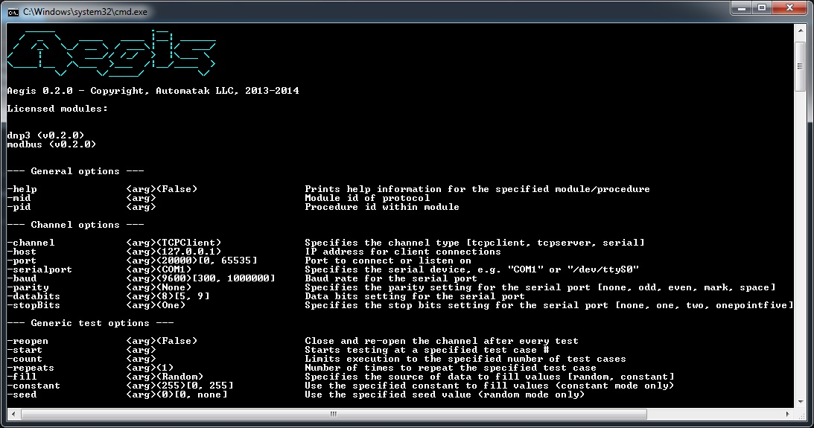

The Console¶
The console provides an alternate means of running test procedures on the shell. Test modules and procedures are invoked using the -mid (module id) and -pid (procedure id) flags. All options available in the Studio are available in the console via a flag with the same name.
Licensing and the PATH¶
The console uses the same license file as the studio. Both applications look for the license file in the same directory as the executable itself. This means that you can run the application from the working directory of your choice.
The Windows installer automatically adds the bin sub-directory of your system’s installation to the PATH environment variable. By default, you can launch AegisConsole from any directory in the shell.